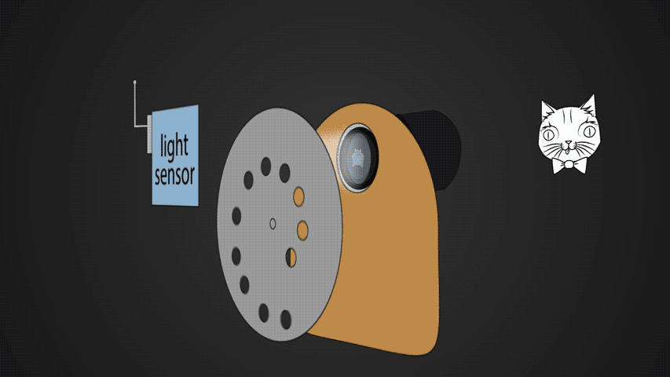
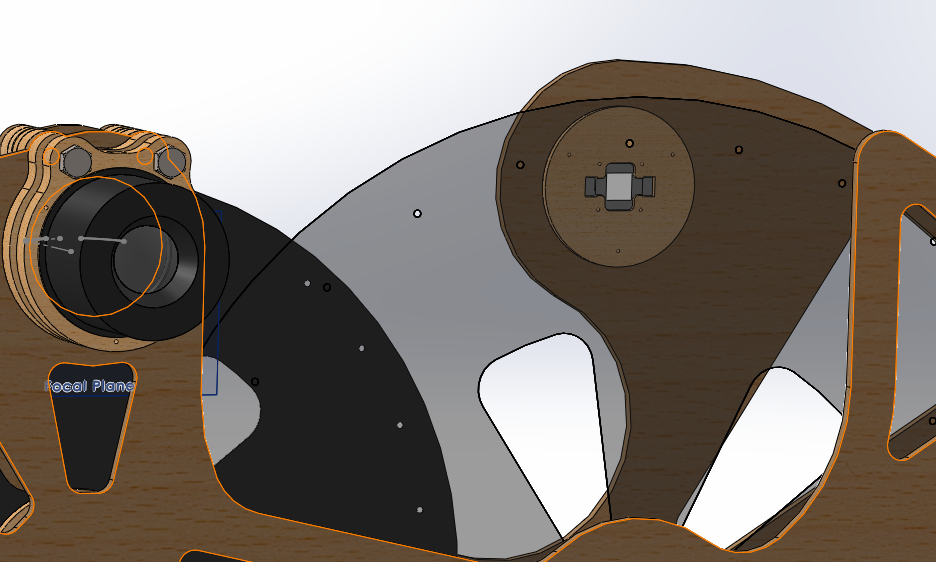
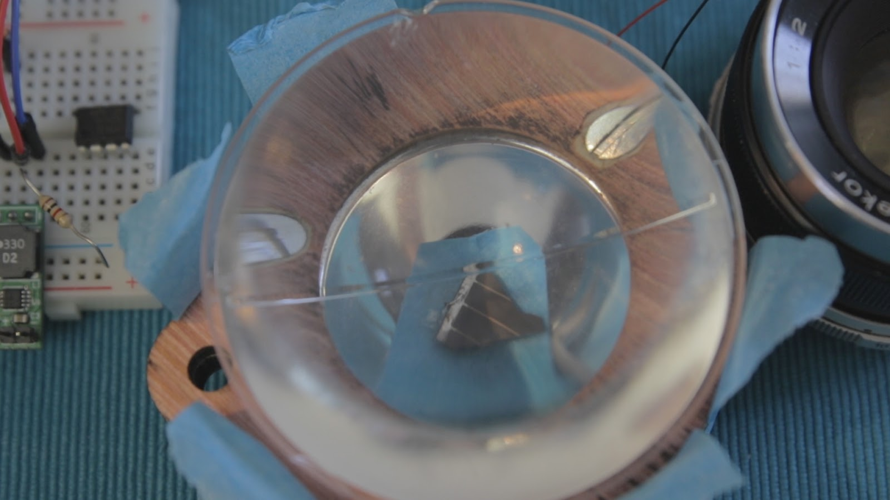
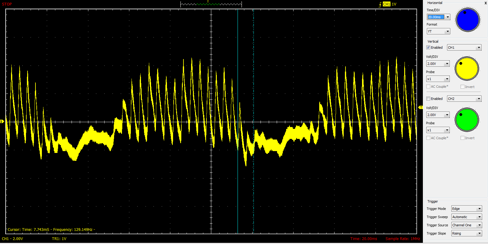

{kind=link}
What?
Bees aren't really endangered, they're just hiding in my household appliances.
Also,
Early television systems were mechanical. Film was great for storing and showcasing movies, but it couldn't broadcast a live image to thousands of households.
| Baird Televisor cabinet |
{kind=link}
Why?
A viewer by the name Tom Heuser send me an email about mechanical TVs, which I had never heard of before. Creating a tiny image with a giant spinning disk is so freaking awesome I couldn't not try to build one.
Video
How?
This is what the projected image coming out of a lens looks like.
| Projected Image |
{kind=link}
Modern digital cameras use millions of sensors to electronically capture the entire image.
Mechanical cameras use a single sensor to electronically capture a single point of the image.
A large rotating disk with a spiral of holes (Nipkow Disk) is used to block all light except a single point. As the disk rotates, light from different parts of the image is cast onto the sensor.
| Mechanical Camera |
{kind=link}
CameraManJohn made an awesome animation demonstrating the camera.
A nearly identical setup is contained within the mechanical TV; the difference being a bright light instead of a sensor, and no lens.
|  |
| Functional animation |
{kind=link}
The camera signal in the studio would be sent over radio to the TV in your home. The brightness of the light in the TV depends on the brightness detected by the sensor in the camera. When the camera and TV disks are synchronized, the image projected onto the camera disk should appear on the TV disk.
| example image |
{kind=link}
Even though only one point is lit up at a time, the slowness of your eyes (persistence of vision) and the high speed of the disk (about 1000 RPM), allows viewers to see the entire image at once.
One major drawback of this system is camera/TV size relative to image size. Holes on the masking disks need to be spaced far enough apart so only one hole is on the image at a time. More holes can be added for higher resolution, but it has a drastic effect on disk size.
Design
My first constraint was using M42 lenses since I have some and they're cheap and I'm cheap.
A 35mm image size and 24 holes yields a reasonable 13 inch disk. The rectangular box on the right is the projected image size.
| M42 50mm lens |
| Nipkow Disk |
{kind=link}
The camera and TV will be built onto a single structure and driven with the same motor. This takes care of disk synchronization.
The next decision was where on the disk to place the camera/TV. This depends on how you want the disk holes to streak across the image. I chose horizontal streaks.
Here is the early SolidWorks CAD model. The TV disk is bigger to make the TV image bigger.
| Really early CAD |
{kind=link}
Here's the finished CAD model. I spend too much time trying to make things fancy.
| Front |
{kind=link}
| Rear |
{kind=link}
I have a bad habit of not updating of the CAD model as a build progresses. Here's an example: the camera assembly is significantly different in the CAD model than the final result. The silver thing pointing out is a flashlight reflector.
| Camera stack |
{kind=link}
On the right is a 10 watt white LED mounted behind the TV disk. It's the same LED used in my stroboscope.
|  |
| 10 watt LED |
{kind=link}
Laser Cutting
All of the parts were cut on my home-built 80 watt laser cutter RetnaSmelter9000.
{kind=link}
Here is the assembled machine. Most of my struggle comes after this...
| Assembled body |
{kind=link}
TV Electronics
Driving the TV LED was easy. I used a constant current driver built for a previous project; a PWM or analog signal controls the current output. You can buy something similar from Sparkfun.
| Constant current driver |
{kind=link}
Camera Optics/Electronics
How hard could it be?

I've used this gif before, and I'll probably use it again because it's the story of my life.
The nightmare truly begins with the camera optics/sensor.Problems
First big problem was my optics setup. Flashlight reflectors are meant to redirect a point source of light into a mostly parallel beam.| Point source to beam |
{kind=link}
| Camera diagram |
{kind=link}
| Phototransistor fall time |
{kind=link}
Solutions
I fixed the beam/reflector issue after doing some research I should have done earlier and found that some form of condensing element is necessary to guide the light. A single thick lens from a car headlight guides the light into a more collimated beam which is exactly what the flashlight reflector needs to properly condense the light.| Headlight lens |
{kind=link}
| Getto chopping |
{kind=link}
|  |
| Solar cell and headlight lens |
{kind=link}
Amplifier Circuit
An NTE859 JFET OpAmp amplifies the tiny signal coming from the solar cell. I found an awesome PDF which describes how to properly amplify a photodiode. An inline 1uF ceramic cap removes the DC offset of the amplified output. I didn't do it, but my plan was to use another amplifier to shift the signal back up via trimpot.
I'll add a schematic when I get the chance, but that PDF and google searching should get you most the way there.
Results
This is the black and white test target.
| High contrast target |
{kind=link}
This is the signal produced. Ideally it would be a square waves, but this is pretty good.
|  |
| Signal produced by the above target |
{kind=link}
| TV curving |
{kind=link}
| misaligned holes |
{kind=link}
This shows properly aligned holes when both disks are the same direction.
 |
| aligned holes |
Instead of recutting the disk holes at a constant angle, I flipped the TV disk back and accepted an upside down TV image.
Here is the TV and camera working together. The camera is pointed toward the targets being shown on the bottom right.

Conclusion
For being built of mostly junk, the TV/camera works pretty well. I was hoping to resolve a person's face or hand, but this is a good start.
Now I just need to make it work well enough that people can tell it's a TV and camera without my explanation...
Version two will include both spirals on the same disk to reduce mechanical complexity.
Now I just need to make it work well enough that people can tell it's a TV and camera without my explanation...
Version two will include both spirals on the same disk to reduce mechanical complexity.
The End
No more hard projects.
Laser cut glass
ReplyDeleteFor a direct light camera better than i ever did on my first direct light one ...don't be put off pretty good results for a first go !
ReplyDelete